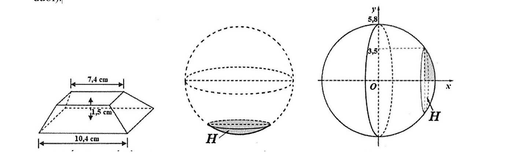

3 Xác định các mệnh đề sau là Đúng hay Sai
Đối với ngành nuôi trồng thủy sản, việc kiểm soát lượng thuốc tồn dư trong nước là
một nhiệm vụ quan trọng nhằm đáp ứng các tiêu chuẩn an toàn về môi trường. Khi nghiên cứu một loại thuốc trị bệnh trong nuôi trồng thủy sản, người ta sử dụng thuốc
đó một lần và theo dõi nồng độ thuốc tồn dư trong nước kể từ lúc sử dụng thuốc. Nồng độ thuốc tồn dư trong nước tại thời điểm \( t \) ngày (\( t \ge 0 \)) được ký hiệu là
\( y(t) \) (đơn vị: mg/lít), thỏa mãn: \[
y(t) > 0,\quad y'(t) = k\,y(t)\quad (t \ge 0)
\] trong đó \( k \) là hằng số khác 0.
Đo nồng độ thuốc tại các thời điểm \( t=6 \) và \( t=12 \) (ngày) thu được kết quả lần lượt là
\( 2\,\text{mg/lít} \) và \( 1\,\text{mg/lít} \). Biết rằng \( y(t) = e^{g(t)} \) với \( t \ge 0 \).
Câu 4.
Để đặt được một vật trang trí trên mặt bàn, người ta thiết kế một chân đế như sau.
Lấy một khối gỗ có dạng khối chóp cụt tứ giác đều với độ dài hai cạnh đáy lần lượt là
\( 7{,}4\,\text{cm} \) và \( 10{,}4\,\text{cm} \), bề dày của khối gỗ là
\( 1{,}5\,\text{cm} \).
Sau đó khoét bỏ một phần của khối gỗ sao cho phần bị khoét có dạng vật thể \( H \),
trong đó \( H \) nhận được bằng cách cắt một khối cầu bán kính
\( 5{,}8\,\text{cm} \) bởi một mặt phẳng, sao cho mặt cắt là hình tròn bán kính
\( 3{,}5\,\text{cm} \) (xem hình minh họa).

Hình minh họa khối chân đế
Thể tích của khối chân đế bằng bao nhiêu
\( \text{cm}^3 \)?
(Không làm tròn các kết quả trung gian, chỉ làm tròn kết quả cuối cùng đến hàng phần mười.)